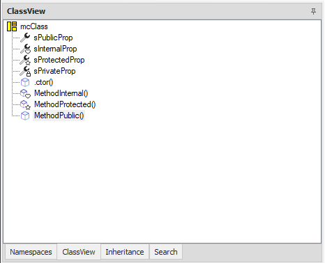
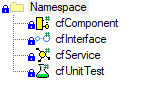

Neuheiten Framework Studio 4.8
Informationen zu aktuellen Versionen und korrigierten Fehlern finden Sie in den Release-Informationen.
Important
Dieses Dokument zeigt die Neuerungen beim Update von Version 4.7 auf 4.8. Beim Update von einer älteren Version beachten Sie bitte auch die Hinweise und Neuerungen der älteren Version (Neuheiten 4.7). Für das Update auf Version 4.7 gibt es einen kleinen Leitfaden.
Important
Beachten Sie zudem den Update Leitfaden für das Update auf die 4.8!
Crystal Reports abgekündigt
Crystal Reports wird nicht mehr unterstützt.
Alle Reports müssen auf DevExpress® umgestellt werden. Für noch nicht umgestellte Reports werden beim Compile der Package-Version entsprechende Warnings generiert und ausgegeben:
#warning Crystal Reports are no longer supported. Please convert the Report File to DevExpress.
Caution
Nicht umgestellte Reports können in der Anwendung nicht mehr ausgedruckt werden. Bei Customizing-Reports wird ggf. auf die DevExpress-Variante des Basis-Packages zurückgefallen, wodurch das Customizing unwirksam wird.
In der IDE können die Crystal Reports für die Migration angezeigt werden. Siehe auch Report Document Type.
Dependency Injection
Für die Verwendung von Dependency Injection in FS wird nun Infrastruktur bereitsgestellt. Außerdem wurden einige Kern-Funktionalitäten bereits auf Dependency Injection umgebaut.
Important
Beachten Sie die Update Hinweise zu Dependency Injection.
Tip
Beachten Sie die umfassende Erklärung wie Dependency Injection in FS funktioniert, sowie die technischen Grundlagen zu Dependency Injecton.
SkiaSharp Library eingebunden
Die SkiaSharp Library ist eingebunden und kann zum Erstellen und Bearbeiten von Pixel-Grafiken verwendet werden.
Bei SkiaSharp handelt es sich um eine Cross-Plattform Grafik-API, welche auf der Skia-Engine von Google basiert.
Eine Referenz auf die SkiaSharp.dll und ein using auf den Namespace SkiaSharp ziehen automatisch in den folgenden Compile-Schritten:
- Services
- Components
- UnitTests
- Forms
Bisher war es üblich, für Pixel-Grafiken die Klasse System.Drawing.Graphics zu verwenden. Diese basiert auf GDI+ und wird deshalb nur auf Windows Betriebssystemen unterstütz. Für einen zukünftigen Einsatz von .net auf z.B. Linux-Servern muss dies abgelöst werden. SkiaSharp bietet diese Möglichkeit.
Komponentenbaukasten - Modular Components
Es wurde ein neues Element hinzugefügt. Die Doku mit allgemeinen Informationen und allen Besonderheiten findet sich hier: Modular Components
Icons
In den Modular Components wurden für Properties und Methods die Icons erneuert, sie orientieren sich an den offiziellen Visual Studio Icons. Dies ermöglicht eine schnellere Übersicht, welches AccessLevel das Property oder die Methode hat.
- public: Property bzw. Method-Zeichen
- internal: mit Herz
- protected: mit Stern
- private: mit Schloss

CodeFiles haben spezifische Icons für den ausgewählten Compile Step erhalten.

Die ClassView der CodeFiles wurde ebenfalls überarbeitet.

Access Unit Tree überarbeitet
Der Access Unit Tree in der Runtime Administration und im Runtime License Manager wurden überarbeitet. Letzterer findet Anwendung bei den Laufzeitlizenzen und im Publish Wizard.
Neben einem neuen Tree-Control mit vielen eingebauten Features, wie Sortierung, gibt es jetzt über STRG + F eine weitere Suchfunktion. Näheres ist hier beschrieben.
Grafische Transformationen überarbeitet
Die Grafischen Transformationen wurden überarbeitet. Neben einem neuen Tree-Control mit vielen eingebauten Features wie Filtern und Sortieren gibt es weitere Verbesserungen:
- Im Service-Release-Modus können jetzt Zuordnungen bearbeitet werden.
- Die Farben für Zuordnung und Selektion sind jetzt deutlich dezenter. Im Customizing werden Zuordnungen aus der Basis mit einem grauen Hintergrund versehen. So können die Änderungen im Customizing besser erfasst werden.
- Beim Öffnen einer Transformation wird die erste Ebene aufgeklappt.
- Es gibt eine Extra Spalte "Assigned". Diese bietet den Vorteil, dass so in einem großen Tree danach gefiltert werden kann.
SQL-Parser abgesichert
Der Sql-Parser hat bisher ungültige bestandteile Bestandteile von SQL-Statements ignoriert ohne dabei einen Fehler zu werfen. Insbesondere unvollständige Identifier, Zeichen-Ketten oder Kommentare wurden nicht erkannt. Das konnte dazu führen, dass unvollständige SQL-Statements verarbeitet wurden - ggf. ohne eine Fehlermeldung.
Einige Beispiele:
-- unvollständiger Identifier [Spalte1 :
SELECT 1 FROM Tabelle ORDER BY [Spalte1, [Spalte2]
-- Spontane Sonderzeichen wie z.B. # pasen zu keiner Syntax und wurden ignoriert.
SELECT 1 FROM Tabelle # ORDER BY [Spalte1, [Spalte2]
-- Kommentar nicht richtig beendet - Where Bedingung wurde ignoriert.
SELECT 1 FROM Tabelle /* Ein Kommentar * / WHERE [Spalte] = 7
Derartige falsche Statements führen jetzt zu ensprchenden SQL-Fehlern.
Java 21
Die Java Version des Java-Clients wurde auf Java 21 aktualisiert. Entsprechend dessen muss zwingend die neuste Version des FSClientLaunchers installiert werden.
Note
Ab FS 4.8 wird nur noch Java 21 unterstützt.
Java 21 unterstützt nur noch 64-Bit Systeme.
LookAndFeel - FlatLAF
Seit Java 17 gibt es keinen Zugang mehr zu den Windows LookAndFeel UIComponents.
Das hat zur Folge, dass das Java eigene Metal-LookAndFeel standardmäßig aktiv ist.
Da das Metal-LookAndFeel aber teilweise unschön aussieht, wurde das open-source LookAndFeel FlatLAF eingebunden.
Die Darstellung einiger Controls im Java-Client hat sich daher verändert.
Note
Das an den Java-Client übergebene lookAndFeel Argument wird nun nicht mehr ausgewertet und hat keinen Einfluss auf die Oberfläche.
Anpassung eigener Custom Controls
Sollten Sie eigene Custom Controls implementiert haben, müssen diese auf Java 21 upgedated werden und neu eingebunden werden. Für die erforderliche Signierung der Custom Controls können Sie sich bei unserem Support melden.
Browser-Control FxBrowser entfernt
Im Zuge des Updates auf Java 21 wurde der FxBrowser von JavaFx ausgebaut. Der JxBrowser ist somit das einzige in FS integrierte Browser-Control. Die eingebundene Java 21 Runtime, die durch den FSClientLauncher ausgerollt wird, enthält damit nicht mehr die JavaFx Componenten.
Warning
Die aktuelle Implementierung von JxBrowser in FS unterstützt kein Linux oder macOS. Auf diesen Betriebssystemen wird dementsprechend das Browser-Control nicht funktionieren.
Broker-Launch Endpoint
Der /api/fsclient-Endpoint, der für den Download der .fsclient-Datei genutzt wird, wurde abgeändert.
Der Parameter dl wurde entfernt und stattdessen ein neuer Endpoint geschaffen.
Ursprünglich wurde der Parameter eingebaut, um Content-Management-Systemen, wie SharePoints o.ä., die mit dem Startlink aus der Startpage nicht zurechtgekommen sind, eine Möglichkeit zu bieten den Client zu starten.
In diesen Systemen hinterlegte Links müssen auf den neuen Endpoint /api/launch abgeändert werden.
Weitere Neuerungen
- Änderungen an Methoden und Properties bei einem ausgecheckten Record werden durch die neue Spalte
Modifiedangezeigt. - Es wurden dynamisch erweiterbare App-Argumente hinzugefügt, auf die, über die ClientInfos bzw. ClientInfosAppArgs im Broker-Code, zugegriffen werden kann.
- Die StartPage wurde visuell überarbeitet.
- Die IDE bietet ein neues Command Restart with Maintenance Mode.
- Wenn eine neue Package-Version eröffnet wird, wird das Datum und die Quell-Package-Version gespeichert. Diese Infos sind dann in der Source Control History einsehbar.